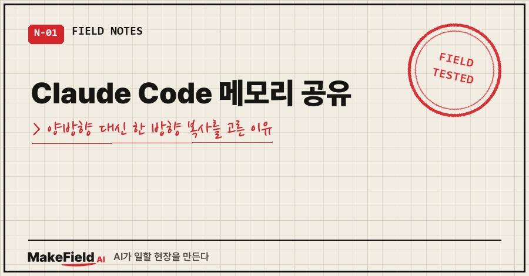
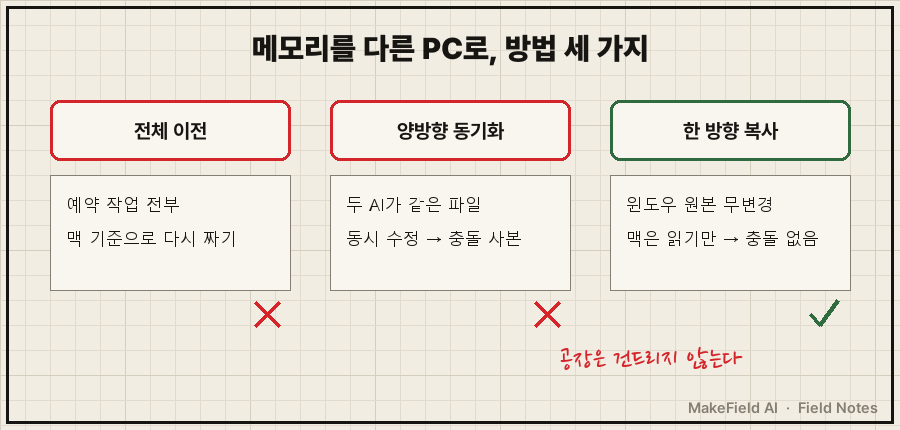
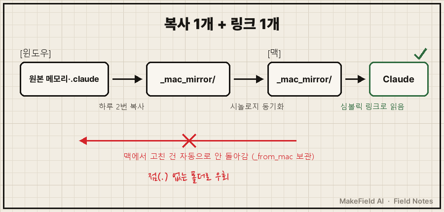
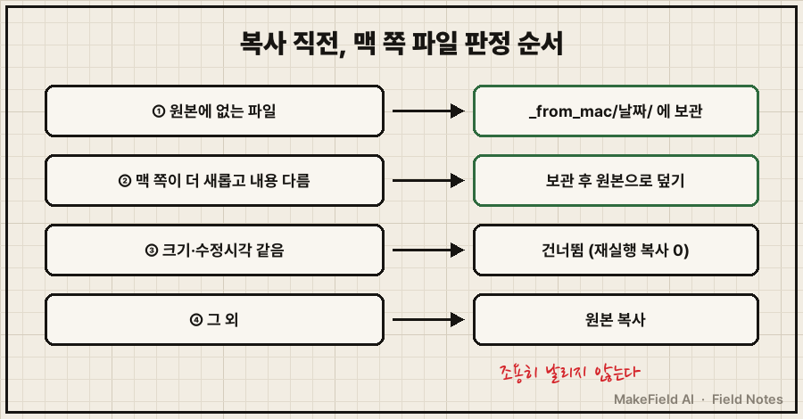

맥북을 펴고 AI한테 일을 시키면, 윈도우 AI한테 몇 달 동안 가르친 규칙을 하나도 모르고 있었어요.
결국 맥북을 내려놓고 윈도우 PC에 원격으로 들어가서 일하는 날이 반복됐습니다.
결론부터 적을게요. Claude Code 메모리 공유는 두 컴퓨터가 같이 고치는 양방향 동기화보다, 원본 PC 한 대에서 다른 PC로 하루 두 번 한 방향 복사하고 받는 쪽은 심볼릭 링크로 그 복사본을 읽게 하는 편이 충돌 없이 됐어요. (2026년 11월, 윈도우 PC → 맥북, 시놀로지 드라이브 동기화 기준 실측)
평일엔 공장 자동화·제어 일을 하고, 퇴근 후엔 윈도우 PC 한 대에 개인 AI 자동화를 '공장'처럼 돌려 두는 15년차 엔지니어입니다.
지난달 맥·윈도우 같이 쓰기 글에 "AI 기억은 컴퓨터마다 따로"라는 함정을 적었는데, 이번엔 그 숙제를 푼 기록이에요.
1. 왜 맥의 AI는 윈도우에서 가르친 걸 모를까?
Claude Code의 자동 메모리는 작업 폴더가 아니라 각 컴퓨터의 사용자 폴더에 저장돼서, 작업 폴더를 동기화해도 같이 넘어가지 않아요.
공식 문서에도 "Auto memory is machine-local"이라고 적혀 있습니다.
제 경우엔 넘어가지 않는 게 두 덩어리였어요.
- 윈도우 AI가 쌓아 둔 메모리 파일 300여 개 (사용자 폴더
~/.claude/projects/<프로젝트>/memory/) - 작업 폴더 안
.claude/폴더의 규칙·서브에이전트·명령·스킬
두 번째는 작업 폴더 안에 있는데도 안 넘어갔어요. 지난 글에 적은 대로, 제 시놀로지 드라이브 설정이 점(.)으로 시작하는 폴더를 동기화에서 빼고 있거든요.
지난 글에선 "중요한 건 CLAUDE.md에 옮겨 적자"로 버텼는데, 규칙이 300개를 넘으니 손으로 옮기는 게 안 되더라고요..
2. 세 가지 방법 중 한 방향 복사를 고른 이유
AI랑 같이 놓고 비교한 선택지는 셋이었어요.
| 방법 | 장점 | 고르지 않은 이유 |
|---|---|---|
| 자동화 전체를 맥으로 이전 | 맥 하나로 끝 | 매일 도는 예약 작업이 전부 윈도우 기준이라 다 다시 짜야 함 |
| 메모리 폴더 양방향 동기화 | 어느 쪽에서 배워도 공유 | 두 AI가 같은 파일을 동시에 고치면 충돌 사본이 생김 |
| 윈도우 → 맥 한 방향 복사 | 원본은 그대로, 충돌 없음 | 맥에서 배운 건 자동으로 안 돌아옴 (감수) |
조건은 하나였어요. 윈도우 쪽 원본·경로·예약 작업은 하나도 안 바꾼다. 이미 매일 도는 공장을 건드리지 않는 게 먼저였습니다.

3. 실제로 만든 구조, 복사 1개 + 링크 1개
윈도우가 하루 두 번 원본을 점 없는 폴더(_mac_mirror/)로 복사하고, 맥은 Claude가 찾는 자리를 그 폴더로 향하는 심볼릭 링크로 바꿨어요.
심볼릭 링크는 "이 폴더를 열면 실제로는 저 폴더를 보여 줘"라는 바로가기 같은 거예요.
복사는 새 예약 작업을 만들지 않고, 맥 기록을 처리하려고 이미 하루 두 번(10:15·22:15) 돌던 작업에 함수 하나를 얹었습니다.
맥 쪽 링크는 이렇게 걸었어요. 사용자 이름은 지웠습니다.
M=~/.claude/projects/<맥 프로젝트 폴더>
[ -e "$M/memory" ] && [ ! -L "$M/memory" ] && mv "$M/memory" "$M/memory_local_backup"
ln -sfn ~/<작업폴더>/_mac_mirror/memory "$M/memory"기존 폴더는 지우지 않고 _local_backup으로 이름만 바꿨어요. 링크가 안 먹으면 되돌릴 자리를 남겨 둔 거죠.

4. 만들면서 걸린 자리 4개
그냥 복사만 하면 될 줄 알았는데, 세부에서 네 번 멈췄어요.
- 폴더 이름은 영문으로. 맥은 한글 파일 이름을 자모로 쪼개 저장해서(NFD), 링크 경로에 한글이 끼면 꼬일 수 있어요. 그래서
_mac_mirror로 지었고, 복사 코드도 파일 이름을 비교하기 전에 한 형식(NFC)으로 맞춥니다. - 맥에서 고친 파일은 지우지 않고 보관. 복사할 때 맥 쪽 파일이 원본보다 새롭고 내용도 다르면, 덮어쓰기 전에
_from_mac/날짜/로 옮겨 둬요. 맥에서 배운 걸 조용히 날리지 않으려고요. - 윈도우 전용 설정은 빼기.
settings.json엔 윈도우 경로로 된 훅·권한이 들어 있어서 복사 대상에서 뺐어요. 플러그인도 맥에서 따로 설치합니다. - 복사가 실패해도 원래 일은 계속. 이 함수가 에러를 내도 기존 처리(맥 기록 옮기기)는 멈추지 않게 감쌌어요. 얹은 기능이 기존 공장을 세우면 안 되니까요.

5. 됐는지는 어떻게 확인했나요?
윈도우에서 손으로 먼저 돌린 첫 실행 결과를 출력 형식대로 옮기면 이래요.
[OK] 맥 미러: 복사 329 / 맥 변경분 보관 0메모리 311개 + .claude 18개 = 329개. 인덱스 파일(MEMORY.md)은 원본과 해시가 같았고, 바로 다시 돌리니 복사 0개였어요. 바뀐 것만 복사한다는 뜻이죠.
그날 밤 22:15 예약 실행도 LastResult=0으로 끝났습니다.
맥에서는 Claude를 새로 열고 두 가지를 물었어요. 메모리 인덱스에 뭐가 있는지, 쓸 수 있는 서브에이전트가 뭔지. 윈도우 규칙이 그대로 나왔고 서브에이전트 8개가 다 잡혔어요!
하나 헛짚은 게 있어요. 처음엔 확인 방법을 /agents 화면으로 적어 뒀는데, 맥에서 쳐 보니 이 문구가 나왔습니다.
The /agents wizard has been removed그래서 확인 방법을 "서브에이전트를 전부 나열해 줘"라는 질문으로 바꿨어요. 버전이 바뀌면 확인 화면도 바뀌더라고요.
아직 안 된 것도 있어요. 반대 방향이에요. 맥이 "맥에서만 배운 메모리 5개를 윈도우에도 넣어 달라"는 요청 파일을 남겼는데, 그날 밤까지 윈도우에 도착하지 않았어요. 맥 쪽 동기화 업로드 상태를 확인하는 중입니다.
그리고 복사가 하루 두 번이라, 윈도우에서 방금 가르친 건 최대 반나절 늦게 맥에 도착해요.
이런 걸 물어보실 것 같아서
Q. Claude Code 메모리 공유를 양방향으로 하면 안 되나요?
두 컴퓨터에서 동시에 세션을 열지 않는다면 될 수도 있어요. 저는 윈도우에서 예약된 AI 작업이 하루에도 여러 번 돌아서, 언제 어느 쪽이 메모리를 고칠지 다 챙길 자신이 없었어요. 그래서 같은 파일을 두 곳이 건드리는 순간을 아예 없애는 쪽을 골랐습니다.
Q. 심볼릭 링크가 안 먹으면요?
제가 정해 둔 예비 방법은 CLAUDE.md에 "세션 시작 때 _mac_mirror/memory/MEMORY.md를 먼저 읽어라" 한 줄을 넣는 거예요. 자동 로드는 아니어도 AI가 같은 인덱스를 보게 됩니다.
Q. 윈도우에서 맥으로 원격 접속해서 링크를 걸면 더 편하지 않나요?
그렇게 하려다 Permission denied (publickey)에 막혔어요. 윈도우 키가 맥에 등록돼 있지 않아서요. 링크는 맥에서 맥 Claude가 걸게 했고, 결과적으로 그게 깔끔했습니다.
맥북을 펴면 이제 윈도우 원격 창부터 찾지 않아도 돼요. 여러분은 AI를 두 대 이상에서 쓰실 때, 어느 쪽을 '원본'으로 정해 두셨나요?
집 PC와 노트북, 사무실과 현장처럼 AI를 여러 자리에서 굴리는 구조를 팀 사정에 맞게 짜야 한다면 makefield.ai에서 상담을 받고 있어요.
출처
- Claude Code 공식 문서, How Claude remembers your project — "Auto memory is machine-local. … Files are not shared across machines or cloud environments." → https://code.claude.com/docs/en/memory
- 실측: 2026-11-10 개인 윈도우 PC·맥북 단방향 미러 구축 기록(사용자명·IP·기기명 제외)
태그: #ClaudeCode메모리공유 #ClaudeCode메모리 #ClaudeCode #클로드코드 #맥윈도우같이쓰기 #두대컴퓨터AI #심볼릭링크 #시놀로지드라이브 #점폴더동기화 #단방향동기화 #폴더미러링 #작업스케줄러 #AI자동화 #자동화만들기 #MakeFieldAI